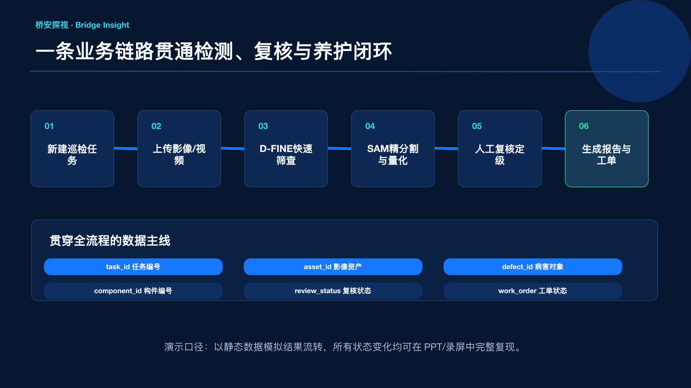

现场采集端
无人机与可见光相机采集影像，记录任务编号、构件编号和时间戳。
BRIDGE INSIGHT
选择 1–5 张桥梁巡检图片进行演示
尚未选择图片
等待影像输入
检测结果将在此展示
演示说明：本页面使用预置规则模拟推理过程，不调用真实模型或后端 API；模型结果仅用于展示业务流程。
任务、影像、病害对象和工单状态贯穿全流程。

无人机与可见光相机采集影像，记录任务编号、构件编号和时间戳。
D-FINE 轻量推理输出候选框和结构化结果，弱网环境支持本地缓存。
SAM 精细分割、骨架量化和人工复核部署于地面站或中心 GPU。
病害台账、报告与工单形成闭环；标准化 API 为后续产品化迭代内容。